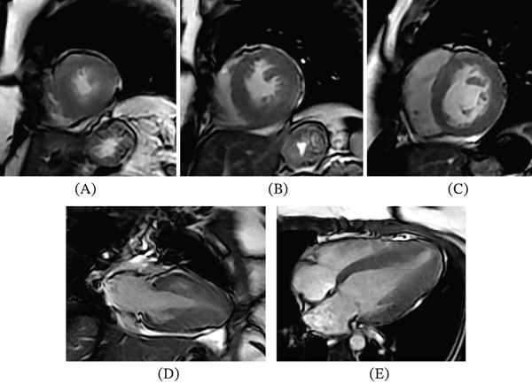

Ficha del catálogo
Miocardiopatía hipertrófica
- Sistema
- Cardiovascular
- Modalidad
- RM
- Región
- Tórax
- Dificultad
- Avanzado
Es una enfermedad del músculo cardiaco de base genética caracterizada por hipertrofia ventricular izquierda que no se explica por sobrecarga de presión. La distribución más habitual es asimétrica y de predominio septal, aunque existen formas apicales y concéntricas. Es una causa relevante de muerte súbita en personas jóvenes y deportistas, lo que confiere gran valor a su detección y a la estratificación del riesgo.
Técnica
La resonancia cardiaca aporta la medición precisa del grosor parietal en todos los segmentos, incluidos los que el ecocardiograma visualiza mal, como el ápex y la pared anterolateral. Las secuencias de cine muestran la obstrucción dinámica del tracto de salida y el movimiento anterior sistólico de la valva mitral. El realce tardío cuantifica la fibrosis, dato relevante para el pronóstico.
Qué observar
- Grosor parietal máximo en telediástole y segmento donde se localiza
- Patrón de distribución de la hipertrofia, septal asimétrica, apical o concéntrica
- Obstrucción dinámica del tracto de salida y movimiento anterior de la valva mitral
- Realce tardío parcheado, sobre todo en los puntos de inserción del ventrículo derecho
- Tamaño de la aurícula izquierda y grado de insuficiencia mitral
- Criptas miocárdicas, aneurisma apical y trombo asociado
Hallazgos
Se observa engrosamiento parietal que suele afectar de forma predominante al septo interventricular, con cavidad ventricular pequeña y función sistólica conservada o aumentada. En la forma apical el ápex adopta una morfología en pala de naipe. El realce tardío se distribuye de manera parcheada dentro del miocardio hipertrofiado y en los puntos de unión del ventrículo derecho con el septo, y su extensión se relaciona con el riesgo de arritmias.
Perlas
El corazón del deportista se distingue por una hipertrofia moderada y simétrica con cavidad ventricular dilatada, función normal y ausencia de realce tardío, y además regresa tras un periodo de desentrenamiento, mientras que en la miocardiopatía hipertrófica la cavidad es pequeña y la hipertrofia asimétrica y persistente.
Diagnóstico diferencial
- Cardiopatía hipertensiva
- La hipertrofia es concéntrica y moderada, con antecedente de hipertensión y sin realce en puntos de inserción.
- Corazón de deportista
- Hipertrofia leve y simétrica con cavidad dilatada, función normal y regresión con el desentrenamiento.
- Amiloidosis cardiaca
- Presenta realce subendocárdico difuso, engrosamiento del septo interauricular y dificultad para anular el miocardio.
- Estenosis aórtica
- La hipertrofia es concéntrica secundaria a una válvula calcificada con gradiente valvular demostrable.
Simuladores
- Corte oblicuo del septo basal que exagera el grosor medido
- Trabeculación apical prominente que simula hipertrofia
- Rodete septal basal del paciente mayor con hipertensión
Por modalidad
- RM
- Mide con precisión el grosor en todos los segmentos y cuantifica la fibrosis mediante realce tardío.
- US
- El ecocardiograma es la exploración inicial y valora el gradiente dinámico del tracto de salida.
Protocolo
Secuencias de cine en eje corto de base a ápex y en ejes largos de dos, tres y cuatro cámaras, con mediciones de grosor en telediástole y planos dirigidos al tracto de salida. Se añade realce tardío con gadolinio y, cuando están disponibles, mapas paramétricos y cálculo del volumen extracelular. La sincronización con el electrocardiograma es imprescindible.
Clasificación
Se describe por patrón morfológico en septal asimétrica, apical, medioventricular y concéntrica, y por la presencia o ausencia de obstrucción del tracto de salida en reposo o con provocación. La extensión del realce tardío se utiliza como marcador de riesgo arrítmico junto con el grosor parietal máximo y otros datos clínicos.
Errores frecuentes
- Medir el grosor en cortes oblicuos y sobreestimar la hipertrofia
- No explorar el ápex y pasar por alto la forma apical
- Atribuir toda hipertrofia a hipertensión sin valorar el patrón ni el realce

miocardiopatía hipertrófica hipertrofia septal realce tardío muerte súbita tracto de salida resonancia cardiaca fibrosis